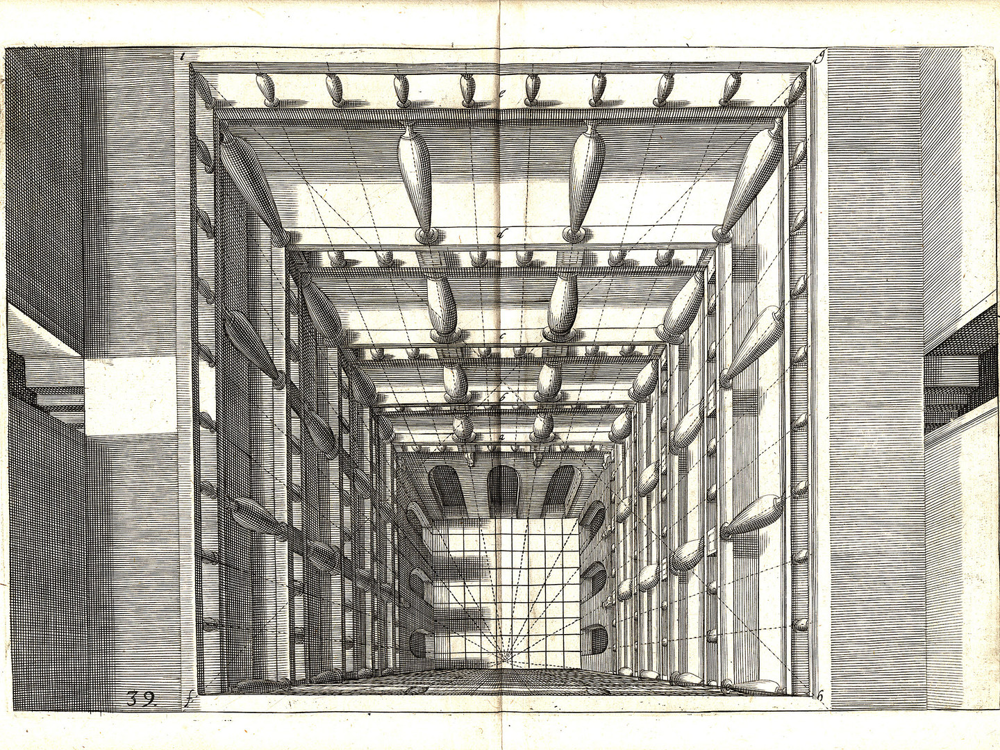
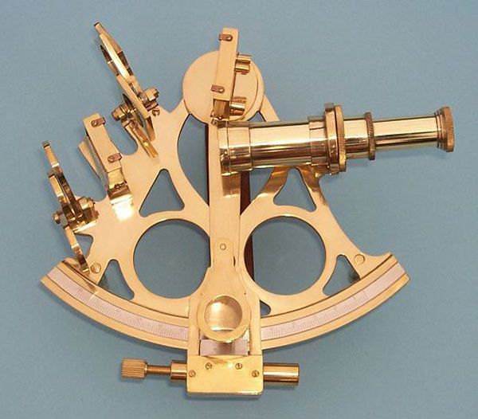
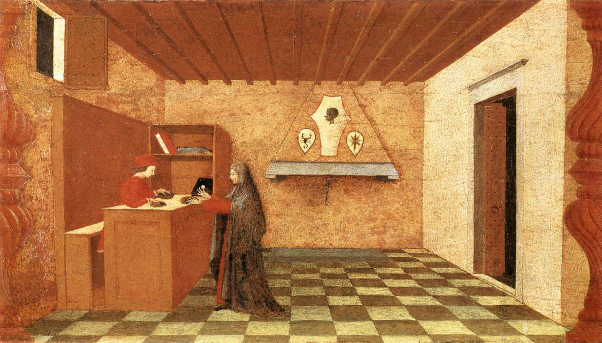
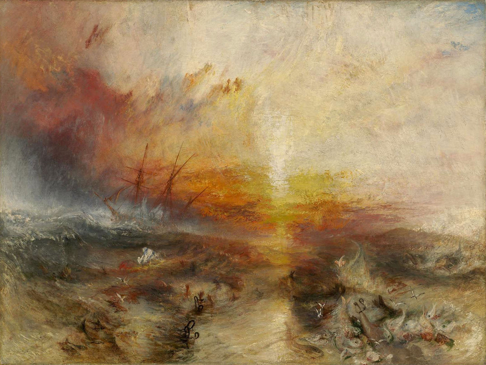
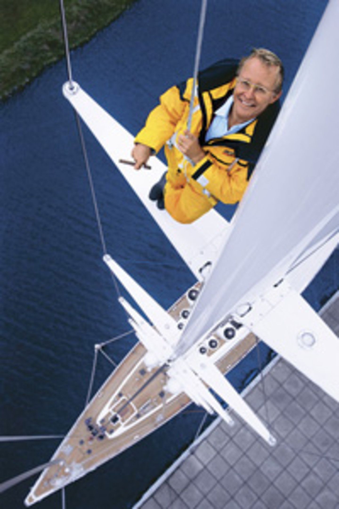
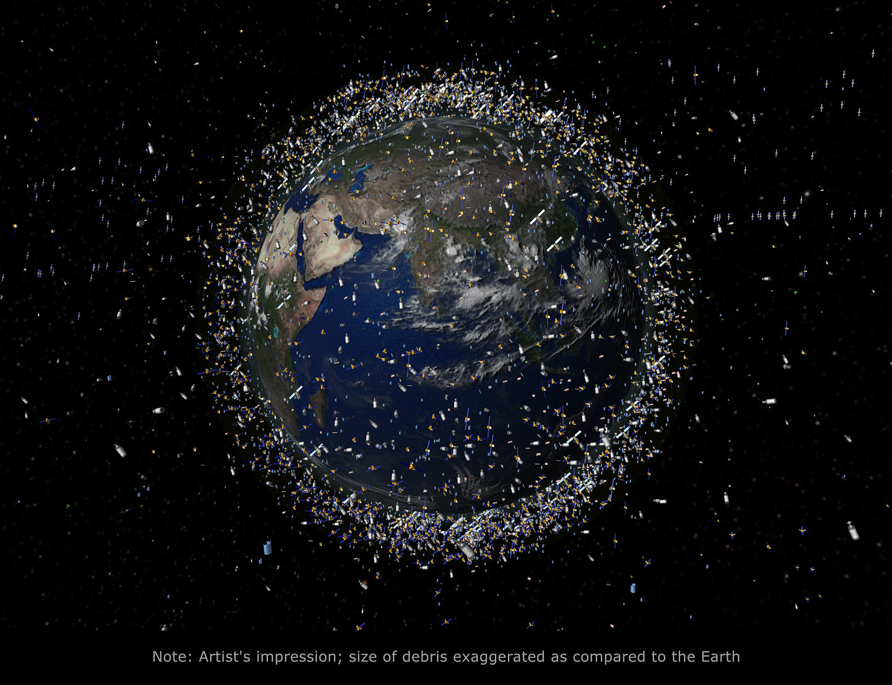

In Free Fall: A Thought Experiment on Vertical Perspective
Originally published in e-flux journal #24 - April 2011
"In
Free Fall"
Imagine you are falling. But there is no ground.
Many contemporary philosophers have pointed out that the present moment is distinguished by a
prevailing condition of groundlessness.1
We cannot assume any stable ground on which to base metaphysical claims or foundational political
myths. At best, we are faced with temporary, contingent,
and partial attempts at grounding. But if there is no stable ground available for our social lives
and philosophical aspirations, the consequence must be a permanent,
or at least intermittent state of free fall for subjects and objects alike. But why don’t we notice?
Paradoxically, while you are falling, you will probably feel as if you are floating—or not even
moving at all. Falling is relational—if there is nothing to fall toward,
you may not even be aware that you’re falling. If there is no ground, gravity might be low and
you’ll feel weightless. Objects will stay suspended if you let go of them.
Whole societies around you may be falling just as you are. And it may actually feel like perfect
stasis—as if history and time have ended and you can’t even remember that
time ever moved forward.
As you are falling, your sense of orientation may start to play additional tricks on you. The
horizon quivers in a maze of collapsing lines and you may lose any sense of
above and below, of before and after, of yourself and your boundaries. Pilots have even reported
that free fall can trigger a feeling of confusion between the self and the
aircraft. While falling, people may sense themselves as being things, while things may sense that
they are people. Traditional modes of seeing and feeling are shattered.
Any sense of balance is disrupted. Perspectives are twisted and multiplied. New types of visuality
arise.
This disorientation is partly due to the loss of a stable horizon. And with the loss of horizon also
comes the departure of a stable paradigm of orientation, which has situated
concepts of subject and object, of time and space, throughout modernity. In falling, the lines of
the horizon shatter, twirl around, and superimpose.

Hans Vredeman de Vries, plate in Perspective, 1604-1605.A Brief History of the Horizon
Our sense of spatial and temporal orientation has changed dramatically in recent years, prompted by
new technologies of surveillance, tracking, and targeting. One of the symptoms
of this transformation is the growing importance of aerial views: overviews, Google Map views,
satellite views. We are growing increasingly accustomed to what used to be called a
God’s-eye view. On the other hand, we also notice the decreasing importance of a paradigm of
visuality that long dominated our vision: linear perspective. Its stable and single
point of view is being supplemented (and often replaced) by multiple perspectives, overlapping
windows, distorted flight lines, and divergent vanishing points. How could these
changes be related to the phenomena of groundlessness and permanent fall?
First, let’s take a step back and consider the crucial role of the horizon in all of this. Our
traditional sense of orientation—and, with it, modern concepts of time and space—are
based on a stable line: the horizon line. Its stability hinges on the stability of an observer, who
is thought to be located on a ground of sorts, a shoreline, a boat—a ground that
can be imagined as stable, even if in fact it is not.
The horizon line was an extremely important element in navigation. It defined the limits of
communication and understanding. Beyond the horizon, there was only muteness and silence.
Within it, things could be made visible. But it could also be used for determining one’s own
location and relation to one’s surroundings, destinations, or ambitions.
Early navigation consisted of gestures and bodily poses relating to the horizon. “In early days,
[Arab navigators] used one or two fingers width, a thumb and little finger on an outstretched
arm, or an arrow held at arm’s length to sight the horizon at the lower end and Polaris at the
upper.”2 The angle between the horizon and the Pole star gave
information about the altitude of
one’s position. This measurement method was known as sighting the object, shooting the object, or
taking a sight. In this way, one’s own location could be at least roughly determined.
Instruments like the astrolabe, quadrant, and sextant refined this way of gaining orientation by
using the horizon and the stars. One of the main obstacles with this technology was the fact
that the ground on which sailors stood was never stable in the first place. The stable horizon
mostly remained a projection, until artificial horizons were eventually invented in order to
create the illusion of stability.

The sextant, a nautical instrument which determined the angle between a celestial object
and the horizon.
The use of the horizon to calculate position gave seafarers a sense of orientation, thus also
enabling colonialism and the spread of a capitalist global market, but also became an important
tool for the construction of the optical paradigms that came to define modernity, the most important
paradigm being that of so-called linear perspective.
As early as 1028, Abu Ali al-Hasan ibn al-Haytham (965–1040), also known as Alhazen, wrote a book of
visual theory, Kitab al-Manazir. After 1200, it became available in Europe and spawned numerous
experiments in visual production between the thirteenth and fifteenth centuries, which culminated in
the development of linear perspective.
In Duccio’s Last Supper (1308–1311, several vanishing points are still evident. The perspectives in
this space do not coalesce into a horizon line, nor do they all intersect in one single vanishing
point.
But in Miracle of the Desecrated Host (Scene I (1465–69, painted by Paolo Uccello, who was one of
the most ardent experimenters in the development of linear perspective, the perspective is aligned
to culminate
in one single vanishing point, located on a virtual horizon defined by the eye line.
Linear perspective is based on several decisive negations. First, the curvature of the earth is
typically disregarded. The horizon is conceived as an abstract flat line upon which the points on
any horizontal
plane converge. Additionally, as Erwin Panofsky argued, the construction of linear perspective
declares the view of a one-eyed and immobile spectator as a norm—and this view is itself assumed to
be natural,
scientific, and objective. Thus, linear perspective is based on an abstraction, and does not
correspond to any subjective perception.3 Instead, it computes a
mathematical, flattened, infinite, continuous, and
homogenous space, and declares it to be reality. Linear perspective creates the illusion of a
quasi-natural view to the “outside,” as if the image plane was a window opening onto the “real”
world. This is also
the literal meaning of the Latin perspectiva: to see through.
This space defined by linear perspective is calculable, navigable, and predictable. It allows the
calculation of future risk, which can be anticipated, and therefore, managed. As a consequence,
linear
perspective not only transforms space, but also introduces the notion of a linear time, which allows
mathematical prediction and, with it, linear progress. This is the second, temporal meaning of
perspective: a view onto a calculable future. As Walter Benjamin argued, time can become just as
homogenous and empty as space.4 And for all these calculations
to operate, we must necessarily assume an
observer standing on a stable ground looking out towards a vanishing point on a flat, and actually
quite artificial, horizon.

Paolo Uccello, Miracle of the Desacrated Host (Scene I and 5, 1465-69.
But linear perspective also performs an ambivalent operation concerning the viewer. As the whole
paradigm converges in one of the viewer’s eyes, the viewer becomes central to the worldview
established
by it. The viewer is mirrored in the vanishing point, and thus constructed by it. The vanishing
point gives the observer a body and a position. But on the other hand, the spectator’s
importance is also
undermined by the assumption that vision follows scientific laws. While empowering the subject
by placing it at the center of vision, linear perspective also undermines the viewer’s
individuality by
subjecting it to supposedly objective laws of representation.
Needless to say, this reinvention of the subject, time, and space was an additional toolkit for
enabling Western dominance, and the dominance of its concepts—as well as for redefining
standards of
representation, time, and space. All of these components are evident in Uccello’s six-panel
painting, Miracle of the Desecrated Host (1465-69. In the first panel, a woman sells a Host to a
Jewish merchant,
who in the second panel tries to “desecrate” it. For this, the Jewish merchant ends up at the
stakes. Along with his wife and two small children, he is tied to a pillar on which parallels
converge as if it
were a target mark. The date of these panels shortly prefigures the expulsion of Jews and
Muslims from Spain in 1492, also the year of Christopher Columbus’s expedition to the West
Indies.5 In these paintings,
linear perspective becomes a matrix for racial and religious propaganda, and related atrocities.
This so-called scientific worldview helped set standards for marking people as other, thus
legitimizing their
conquest or the domination over them.
On the other hand, linear perspective also carries the seeds of its own downfall. Its scientific
allure and objectivist attitude established a universal claim for representation, a link to
veracity that undermined
particularistic worldviews, even if halfheartedly and belatedly. It thus became a hostage to the
truth it had so confidently proclaimed. And a deep suspicion was planted alongside its claims
for veracity from
its inception.
The Downfall of Linear Perspective
But the situation now is somewhat different. We seem to be in a state of transition toward one or
several other visual paradigms. Linear perspective has been supplemented by other types of vision to
the point
where we may have to conclude that its status as the dominant visual paradigm is changing.
This transition was already apparent in the nineteenth century in the field of painting. One work in
particular expresses the circumstances of this transformation: The Slave Ship (1840), by J. M. W.
Turner.
The scene in the painting represents a real incident: when the captain of a slave ship discovered
that his insurance only covered slaves lost at sea, and not those dying or ill on board, he ordered
all dying
and sick slaves to be thrown overboard. Turner’s painting captures the moment where the slaves are
beginning to go under.
In this painting, the horizon line, if distinguishable at all, is tilted, curved, and troubled. The
observer has lost his stable position. There are no parallels that could converge at a single
vanishing point.
The sun, which is at the center of the composition, is multiplied in reflections. The observer is
upset, displaced, beside himself at the sight of the slaves, who are not only sinking but have also
had their
bodies reduced to fragments—their limbs devoured by sharks, mere shapes below the water surface. At
the sight of the effects of colonialism and slavery, linear perspective—the central viewpoint, the
position
of mastery, control, and subjecthood—is abandoned and starts tumbling and tilting, taking with it
the idea of space and time as systematic constructions. The idea of a calculable and predictable
future shows
a murderous side through an insurance that prevents economic loss by inspiring cold-blooded murder.
Space dissolves into mayhem on the unstable and treacherous surface of an unpredictable sea.
Turner experimented with moving perspectives early on. Legend has it that he had himself tied to the
mast of a ship crossing from Dover to Calais, explicitly to watch the horizon change. In 1843 or
1844,
he stuck his head out of the window of a moving train for exactly 9 minutes, the result of which was
a painting called Rain, Steam, and Speed—The Great Western Railway (1844). In it, linear perspective
dissolves into the background. There is no resolution, no vanishing point, and no clear view to any
past or future. Again, more interesting is the perspective of the spectator himself, who seems to be
dangling
in the air on the outer side of the rails of a railroad bridge. There is no clear ground under his
assumed position. He might be suspended in the mist, floating over an absent ground.
In both of Turner’s paintings, the horizon is blurred, tilted, and yet not necessarily denied. The
paintings do not negate its existence altogether, but render it inaccessible to the viewer’s
perception.
The question of horizon starts to float, so to speak. Perspectives assume mobile points of view and
communication is disabled even within one common horizon. One could say that the downward motion of
the
sinking slaves affects the point of view of the painter, who tears it away from a position of
certitude, and subjects it to gravity and motion and the pull of a bottomless sea.

J. M. W. Turner, The Slave Ship, 1840.Acceleration
With the twentieth century, the further dismantling of linear perspective in a variety of areas
began to take hold. Cinema supplements photography with the articulation of different temporal
perspectives.
Montage becomes a perfect device for destabilizing the observer’s perspective and breaking down
linear time. Painting abandons representation to a large extent and demolishes linear perspective in
cubism,
collage, and different types of abstraction. Time and space are reimagined through quantum physics
and the theory of relativity, while perception is reorganized by warfare, advertisement, and the
conveyor belt.
With the invention of aviation, opportunities for falling, nose-diving, and crashing increase. With
it—and especially with the conquest of outer space—comes the development of new perspectives and
techniques of
orientation, found especially in an increasing number of aerial views of all kinds. While all these
developments can be described as typical characteristics of modernity, the past few years has seen
visual
culture saturated by military and entertainment images’ views from above.

Netscape's Jim Clark stands atop 192ft mast of his “superyacht,” Hyperion, during a 1998
Fortune shoot.
Louie Psihoyos/Science Faction Images.
Aircraft expand the horizon of communication and act as aerial cameras providing backgrounds for
aerial map views. Drones survey, track, and kill. But the entertainment industry is busy as well.
Especially in
3D cinema, the new characteristics of aerial views are fully exploited by staging vertiginous
flights into abysses. One could almost say that 3D and the construction of imaginary vertical worlds
(prefigured in
the logic of computer games) are essential to each other. 3D also intensifies hierarchies of
material required to access this new visuality. As Thomas Elsaesser has argued, a hardware
environment integrating
military, surveillance, and entertainment applications, produces new markets for hardware and
software.6
In a fascinating text, Eyal Weizman analyzes verticality in political architecture, describing the
spatial turn of sovereignty and surveillance in terms of a vertical 3D sovereignty.7 He argues that geopolitical
power was once distributed on a planar map-like surface on which boundaries were drawn and defended.
But at present, the distribution of power—he cites the Israeli occupation in Palestine as his
example, but
there could be many others—has increasingly come to occupy a vertical dimension. Vertical
sovereignty splits space into stacked horizontal layers, separating not only airspace from ground,
but also splitting
ground from underground, and airspace into various layers. Different strata of community are divided
from each other on a
y-axis, multiplying sites of conflict and violence. As Achille Mbembe contends,
Occupation of the skies therefore acquires a critical importance, since most of the policing is done
from the air. Various other technologies are mobilized to this effect: sensors aboard unmanned air
vehicles
(UAVs), aerial reconnaissance jets, early warning Hawkeye planes, assault helicopters, an
Earth-observation satellite, techniques of “hologrammatization.”8
Free Fall
But how to link this obsessive policing, division, and representation of ground to the philosophical
assumption that in contemporary societies there is no ground to speak of? How do these aerial
representations—in
which grounding effectively constitutes a privileged subject—link to the hypothesis that we
currently inhabit a condition of free fall?
The answer is simple: many of the aerial views, 3D nose-dives, Google Maps, and surveillance
panoramas do not actually portray a stable ground. Instead, they create a supposition that it exists
in the first place.
Retroactively, this virtual ground creates a perspective of overview and surveillance for a
distanced, superior spectator safely floating up in the air. Just as linear perspective established
an imaginary stable
observer and horizon, so does the perspective from above establish an imaginary floating observer
and an imaginary stable ground.
This establishes a new visual normality—a new subjectivity safely folded into surveillance
technology and screen-based distraction.9 One might conclude
that this is in fact a radicalization—though not an overcoming—of
the paradigm of linear perspective. In it, the former distinction between object and subject is
exacerbated and turned into the one-way gaze of superiors onto inferiors, a looking down from high
to low. Additionally,
the displacement of perspective creates a disembodied and remote-controlled gaze, outsourced to
machines and other objects.10 Gazes already became decisively
mobile and mechanized with the invention of photography,
but new technologies have enabled the detached observant gaze to become ever more inclusive and
all-knowing to the point of becoming massively intrusive—as militaristic as it is pornographic, as
intense as extensive,
both micro- and macroscopic.11

Space debris or junk (such as rocket stages, defunct satellites, and explosion and
collision fragments) orbiting the earth. Frankfurter Allgemeine Zeitung.The Politics of Verticality
The view from above is a perfect metonymy for a more general verticalization of class relations in
the context of an intensified class war from above—seen through the lenses and on the screens of
military, entertainment,
and information industries.12 It is a proxy perspective that
projects delusions of stability, safety, and extreme mastery onto a backdrop of expanded 3D
sovereignty. But if the new views from above recreate societies as
free-falling urban abysses and splintered terrains of occupation, surveilled aerially and policed
biopolitically, they may also—as linear perspective did—carry the seeds of their own demise within
them.
As linear perspective began to tumble down with the sinking bodies of slaves thrown into the ocean,
for many people today the simulated grounds of aerial imagery provide an illusionary tool of
orientation in a condition
in which the horizons have, in fact, been shattered. Time is out of joint and we no longer know
whether we are objects or subjects as we spiral down in an imperceptible free fall.13
But if we accept the multiplication and de-linearization of horizons and perspectives, the new tools
of vision may also serve to express, and even alter, the contemporary conditions of disruption and
disorientation.
Recent 3D animation technologies incorporate multiple perspectives, which are deliberately
manipulated to create multifocal and nonlinear imagery.14
Cinematic space is twisted in any way imaginable, organized around
heterogeneous, curved, and collaged perspectives. The tyranny of the photographic lens, cursed by
the promise of its indexical relation to reality, has given way to hyperreal representations—not of
space as it is, but
of space as we can make it—for better or worse. There is no need for expensive renderings; a simple
green screen collage yields impossible cubist perspectives and implausible concatenations of times
and spaces alike.
Finally, cinema has caught up with the representational freedoms of painting and structural and
experimental film. As it merges with graphic design practices, drawing, and collage, cinema has
gained independence from
the prescribed focal dimensions that have normalized and limited the realm of its vision. While it
could be argued that montage was the first step towards a liberation from cinematic linear
perspective—and was for this
reason ambivalent for most of its existence—only now can new and different sorts of spatial vision
be created. Similar things can be said about multiscreen projections, which create a dynamic viewing
space, dispersing
perspective and possible points of view. The viewer is no longer unified by such a gaze, but is
rather dissociated and overwhelmed, drafted into the production of content. None of these projection
spaces suppose a single
unified horizon. Rather, many call for a multiple spectator, who must be created and recreated by
ever-new articulations of the crowd.15
In many of these new visualities, what seemed like a helpless tumble into an abyss actually turns
out to be a new representational freedom. And perhaps this helps us get over the last assumption
implicit in this thought
experiment: the idea that we need a ground in the first place. In his discussion of the vertiginous,
Theodor W. Adorno scoffs at philosophy’s obsession with earth and origin, with a philosophy of
belonging that obviously
comes packaged within the most violent fear of the groundless and bottomless. For him, the
vertiginous is not about the panicked loss of a ground imagined to be a safe haven of being:
A cognition that is to bear fruit will throw itself to the objects à fond perdu [without hope]. The
vertigo which this causes is an index veri; the shock of inclusiveness, the negative as which it
cannot help appearing
in the frame-covered, never-changing realm, is true for untruth only.16
A fall toward objects without reservation, embracing a world of forces and matter, which lacks any
original stability and sparks the sudden shock of the open: a freedom that is terrifying, utterly
deterritorializing,
and always already unknown. Falling means ruin and demise as well as love and abandon, passion and
surrender, decline and catastrophe. Falling is corruption as well as liberation, a condition that
turns people into
things and vice versa.17 It takes place in an opening we could
endure or enjoy, embrace or suffer, or simply accept as reality.
Finally, the perspective of free fall teaches us to consider a social and political dreamscape of
radicalized class war from above, one that throws jaw-dropping social inequalities into sharp focus.
But falling does
not only mean falling apart, it can also mean a new certainty falling into place. Grappling with
crumbling futures that propel us backwards onto an agonizing present, we may realize that the place
we are falling toward
is no longer grounded, nor is it stable. It promises no community, but a shifting formation.
Colophon
The text of In Free Fall: A Thought Experiment on Vertical Perspective is set in Crimson Text, a
typeface designed by Sebastian Kosch and is inspired by the fantastic work of people like Jan
Tschichold,
Robert Slimbach and Jonathan Hoefler. Crimson Text is part of the Google Open Font Directory.
This website was designed in Canada by Andrea Morreale for the purpose of a typography project at OCAD
University.
Footnotes
1. Examples of so-called anti- and post-foundational philosophy are given in the preface to Oliver
Marchart’s introductory volume Post-Foundational Political Thought: Political difference in Nancy,
Lefort, Badiou and Laclau
(Edinburgh:Edinburgh University Press, 1997, 1–10. Briefly speaking, such thought,as proffered by the
philosophers under discussion, rejects the idea of a given and stable metaphysical ground and revolves
around Heideggerian
metaphors of abyss and ground, as well as the absence of ground. Ernesto Laclau describes the experience
of contingency and groundlessness as a possible experience of freedom.
2. Peter Ifland, “The History of the Sextant”; see
http://www.mat.uc.pt/~helios/Mestre/Novemb00/H61iflan.htm.
3. Erwin Panofsky, “Die Perspektive alssymbolische Form,” in Erwin Panofsky:Deutschsprachige Aufsätze
II, ed. Wolfgang Kemp et al. (Berlin: AkademieVerlag, 1998), 664—758.
4. Walter Benjamin, “Theses on the Philosophy ofHistory,” in Illuminations, trans. H.Zohn. (New York:
Schocken Books, 1969), 261. See https://www.marxists.org/reference/archive/benjamin/1940/history.htm.
5. Etienne Balibar and Immanuel Wallerstein, Race, Nation, Class: Ambiguous Identities(London and New
York: Verso, 1991).
6. The following quote by Elsaesser can be seenas blueprint for this paper, whose inspiration derives
from an informal conversation with the author: “This means that stereoscopic images and the 3-D movie
are part of the new paradigm, which is turning our information societyinto a control society and our
visual culture into a surveillance culture. The movie industry, civil society and the military sector
are all united in this surveillance paradigm, which, as part of a historic process, seeks to
replace“monocular vision,” the way of seeing that has defined Western thought andaction for the last 500
years.
It is this means of seeing that gave rise to awide range of innovations like panel painting, colonial
seafaring and Cartesianphilosophy, as well as the whole concept of projecting ideas, risks, chancesand
courses of action into the future. Flight simulators and other types ofmilitary technology are part of a
new effort to introduce 3-D as the standardmeans of perception—but the development goes even further
to include surveillance. This encompasses an entire catalog of movements and behaviors,all of which are
intrinsically connected to the monitoring, steering andobservation of ongoing processes, and which
delegate or outsource what was oncereferred to as introspection, self-awareness and personal
responsibility.”Thomas Elsaesser, “TheDimension of Depth and Objects Rushing Towards Us. Or: The Tail
that Wags
the Dog. A Discourse on Digital 3-D Cinema.”See
http://www.edit-frankfurt.de/en/magazine/ausgabe-12010/the-dimension-of-depth/the-dimesion-of-depth-and-objects-rushing-towards-us.html.
7. Eyal Weizman,“The Politics of Verticality.” See
https://www.opendemocracy.net/ecology-politicsverticality/article_801.jsp.
8. Achille Mbembe, “Necropolitics,” Public Culture vol. 15, no. 1 (Winter2003): 29. See
http://www.jhfc.duke.edu/icuss/pdfs/Mbembe.pdf.
9. Dieter Roelstraete and Jennifer Allen both describe this new normality from different perspectives in
very good texts. Dieter Roelstraete “(Jena Revisited) Ten Tentative Tenets,” e-flux journal,
issue 16 (May, 2010). See →https://www.e-flux.com/journal/view/137; and Jennifer Allen, “That Eye, The
Sky,” Frieze 132 (June–August 2010).
10. Lisa Parks, Cultures in Orbit: Satellites and the Televisual (Durham, NC: DukeUniversity Press,
2005).
11. In fact, the perspective of the floating camera belongs to a dead man. Most recently, a
dehumanization (or posthumanization) of the gaze is perhaps nowhere as literally allegorized as in the
film
Enter the Void (Gaspar Noé,2010), where, for most of the film, a disembodied point of view endlessly
drifts over Tokyo. This gaze penetrates any space, moving without constraint and with unrestricted
mobility, looking for a body in which to biologically reproduce itself and reincarnate. The point of
view in Enter the Void is reminiscent of the gaze of a drone. But instead of bringing death, it is
looking to recreate its own life. To this end, the protagonist basically wants to hijack a fetus. But
the film is also very picky about this procedure: mixed race fetuses get aborted in favor of white
ones.There are more issues that link the movie to reactionary breeding ideologies. Floating and
biopolitical policing are mixed into acomputer-animated obsession with superior bodies, remote control,
and digital aerial vision. The floating gaze of the dead man thus literally echoes Achille Mbembe’s
powerful description of necropower: necropower regulates life through the perspective of death.
Could these tropes allegorized in a single (and frankly, god-awful)movie be expanded into a more general
analysis of disembodied hovering point of views? Do the aerial views, drone perspectives,
and 3D dives into abysses stand in for the gazes of “dead white males,” a worldview which lost its
vitality, yet persists as an undead but powerful tool to police the world and control its own
reproduction?
12. Paraphrasing Elsaesser’s notion of the“military-surveillance-entertainment complex.” See
http://www.edit-frankfurt.de/en/magazine/ausgabe-12010/the-dimension-of-depth/the-dimesion-of-depth-and-objects-rushing-towards-us.html.
13. Assuming there is no ground, even those on the bottom of hierarchies keep falling.
14. These techniques are described in Manessh Agrawala, Denis Zorin, and Tamara Munzer, “Artistic
multiprojection rendering,”in Proceedings of the Eurographics Workshop on Rendering Techniques 2000,
ed. Bernard Peroche and Holly E.Rusgmaier (London: Springer-Verlag,2000), 125–136; Patrick Coleman and
Karan Singh, “Ryan: Rendering YourAnimation Nonlinearly Projected,” in NPAR ’04: Proceedings
of the 3rd International Symposium on Non-photorealistic Animation and Rendering (New York: ACM Press,
2004), 129–156; Andrew Glassner, “Digital Cubism, part2,” IEEE Computer Graphics and. Applications,
vol. 25, no. 4 (July 2004): 84–95; Karan Singh, “A Fresh Perspective,” in Proceedings of the
Eurographics Workshop on Rendering Techniques 2000,ed. Bernard Peroche and Holly E. Rusgmaier(London:
Springer-Verlag, 2000), 17–24; Nisha Sudarsanam, CindyGrimm, and Karan Singh, “Interactive Manipulation
of Projections with a Curved Perspective,” Computer Graphics Forum24 (2005): 105–108; and
Yonggao Yang, Jim X. Chen, and Mohsen Beheshti,“Nonlinear Perspective Projections and Magic Lenses: 3D
View Deformation,” IEEEComputer Graphics Applications, vol. 25, no. 1 (January/February 2005):76–84.
15. Hito Steyerl, “Is a Museum a Factory?” e-flux journal, issue 7 (June, 2009). See
https://www.e-flux.com/journal/view/71.
16. Theodor W. Adorno, Negative Dialectics, trans. E. B. Ashton (New York: Continuum,1972), 43.
17. Taking the cue from GilLeung’s reflection, “After before now: Notes on In Free Fall.” See
https://www.e-flux.com/journal/24/67860/in-free-fall-a-thought-experiment-on-vertical-perspect
ive/href=.